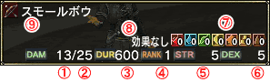
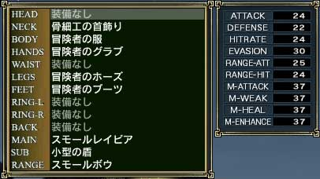

マウス操作ならばマウスパレットのマップボタンで、キーボード操作ならば「V」キーで町の地図を見られるので、「Weapon Shop」を目指してください。武器を売っているNPCは2人おり、それぞれ扱っている武器の種類が違います。
ゲーム開始直後は「弓」くらいしか買う必要がありません(武器スキルで「弓」を選択した場合)。話しかける方法は「チュートリアル ○○」の時と同じ方法です。マウスならばカーソルをあわせて左クリック、キーボードならばTabでカーソルを移動させてエンターキーもしくは「Q」キーです。
実際の買い物は所持金や自分の基礎パラメーターと相談して購入してください。また使う武器の種類を間違えると装備できないので注意してください。
購入した後は、「装備変更」ウィンドウを開き装備することを忘れずに。
1 : 武器の名前
2 : 装備できるかどうか
○は装備できる
△は装備できるが能力が落ちる
Ｘは装備できない
3 : 価格

1 : 武器の威力
2 : 消費ST
3 : 耐久力
4 : 装備に必要なクラスランク
5 : 装備に必要な基礎パラメーター
6 : 装備に必要な基礎パラメーター
7 : 星魔法の状態
8 : 装備時に上昇するパラメーター(この場合は上昇無し)
9 : 装備品の名前
| アイコン |
種類 |
 |
片手剣
(ツバの形と刃渡りの長さで両手剣と区別) |
|
両手剣
(ツバの形と刃渡りの長さで両手剣と区別) |
|
短剣
(ツバの色と刃渡りの長さで片手剣と区別) |
|
格闘 |
|
片手棍 |
|
両手杖 |
|
弓 |
武器を装備するにはまず「装備変更」ウィンドウを開きます。メニュー1ページ目の「装備変更」を選ぶか、「E」キーを押してこのウィンドウを開いてください。
次に近接攻撃用の武器ならば「MAIN」を、弓ならば「RANGE」を選択します。すると持っている武器の一覧を表示するウィンドウに変わるので、装備したい武器を選んでください。

(装備変更ウィンドウ)
(装備可能な装備品一覧) |